You are here: Home → Basic Animation
Basic Animation
Welcome to the animation lab! We will be going over animation on a 2D level, as well as create our first 3D animation.
Hotkeys for This Lesson
- S = keys a selected object
Basics of 2D Animation
Before we jump into the wonderful world of 3D animation, you should have an understanding of the principles behind 2D animation . There are 12 "basic principles" that adds the "illusion of life" to animation; without these, you might end up with creepy animations that glide across the screen in an eerie manner.
- Squash and stretch
- Anticipation
- Staging
- Pose to Pose versus Straight Ahead Action
- Follow Through and Overlapping Action
- Slow In and Slow Out
- Arcs
- Secondary Action
- Timing
- Exaggeration
- Solid Drawing
- Appeal
Squash and Stretch
This is probably one of the most important principle to take home from this lecture. Squashing and stretching an object gives it a sense of weight and volume. It is very important to keep in mind that the volume of the object does not change when it is squashed or stretched. For example, in the bouncing ball example, which you will soon see, when we lengthen the ball horizontally, we also shorten it vertically correspondingly.
Anticipation
Anticipation is simply any action in your animation that prepares the audience for the main action to come. A classic example would be a character winding its arms and front leg back before dashing off in sprint.
Staging
This simply describes setting up your scene to focus the audience's attention to the most important aspects of the scene. For example, a close-up shot of a character's face would highlight the character's immediate emotion whereas a long shot of say, a desert, might highlight the vast emptiness of the setting to provoke a feeling of loneliness. In the wise words of Wikipedia: "The essence of this principle is keeping focus on what is relevant, and avoiding unnecessary detail." You don't want to overwhelm the audience with too much information or actions at once.
Pose to Pose versus Straight Ahead Action
These are two different approaches to 2D animation. In "straight ahead action" approach, the artist draws out a scene frame by frame from beginning to end, while in "pose to pose," the artist starts by drawing a few key frames, and filling in the intervals later. The latter approach describes what we do in Maya; we set "key frames" and Maya fills in the in-betweens for us. However, as you will soon discover, Maya's in-between frames can be unpredictable and not what we want, so we must specify what we want using various tools and tricks, which you will learn about later.
Follow Through and Overlapping Action
Follow through is the motion of separate parts of the character that continues after the character has stopped. For example, when a character throws a ball, the hand continues to move after releasing the ball.
Overlapping means to start a second action before the first action has completely finished. This keeps the interest of the viewer, since there is no dead time between actions.
Slow In and Slow Out
Movements in real life are rarely, if ever, instantaneous; they require time to accelerate and slow down. Thus, an animation looks more realistic if it has more frames near the beginning and end of a movement, and fewer in the middle.
A great example resides over on the Siggraph servers
Arcs
Most human and animal actions occur along an arched trajectory, and animation should reproduce these movements for greater realism. This can apply to a limb moving by rotating a joint, or a thrown object moving along a parabolic trajectory. The exception is mechanical movement, which typically moves in straight lines.
Secondary Action
This refers to action that directly results from another action. For example, a person's arms swinging back and forth would be secondary action caused by the person's act of walking. The important thing about secondary actions is that they emphasize, rather than take attention away from the main action.
Timing
Timing in animation refers to the speed of the action. Timing is what gives animation physical and emotional meaning. In the physical sense, the speed of the movement allows the viewer to perceive the mass of the object, since heavier objects will move slower than lighter objects. In the emotional sense, different timings of the same action can indicate completely different emotions.
Exaggeration
Exaggeration does not mean just distorting the actions or objects arbitrarily, but the animator must carefully choose which properties to exaggerate. If only one thing is exaggerated then it may stand out too much. If everything is exaggerated, then the entire scene may appear too unrealistic.
Solid Drawing
The principle of solid - or good - drawing, really means that the same principles apply to an animator as to an academic artist. The drawer has to understand the basics of anatomy, composition, weight, balance, light and shadow etc. Of course, modern-day computer animators in theory do not need to draw at all, but can still benefit greatly from such understanding.
Appeal
Appeal means something that the audience will want to see. This is equivalent to charisma in a live actor. A scene or character should not be too simple (boring!) or too complex (can't understand it). One principle to achieve this is to avoid mirror symmetry. Asymmetry tends to be more interesting and appealing.
References
- Principles of Traditional Animation Applied to 3D Computer Animation
- "12 Basic Principles of Animation" on Wikipedia
If you are interested in learning more about the basics of animation, the CS department offers a great 2D animation course taught by Brian Barsky. The course number is CS194-7 and is generally offered every semester.
Animation in Maya
The Timeline and Keys
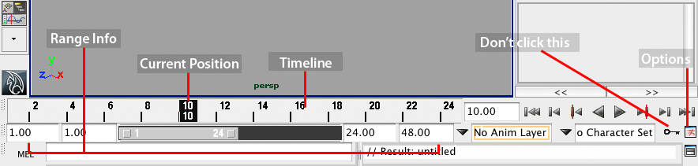
This is Maya's timeline. Here you are able to set animation keys, scrub through the animation, and change the range of time in your animation. Notice the four boxes that comprise the Range Info. The two outer boxes (with values 1.00 and 48.00) are the start and end of your timeline. Think of these two numbers as representing the length of the whole timeline. The two inner boxes represent the start and end of the current section of the timeline. Many times, you will only want to edit keyframes on part of the timeline.
You should make sure not to have "Auto Key" on because anytime you move or change something, it will automatically key it for you, which can be very annoying if you are not trying to make an actual key.
Changing Your Settings
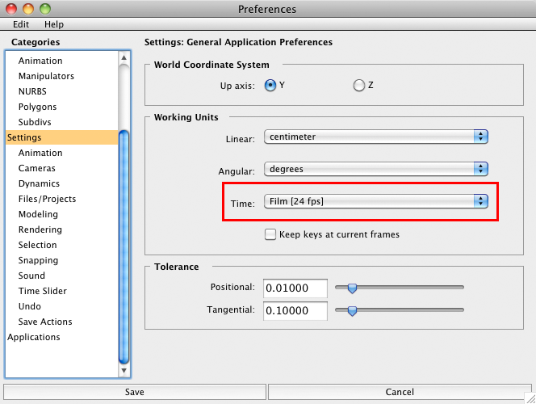
An important thing to before even starting to create your animations is to make sure your settings are correct in the options menu. It is very important to decide these settings before you work in groups to avoid problems when trying to merge projects together later on. We like to use 24fps for this course.
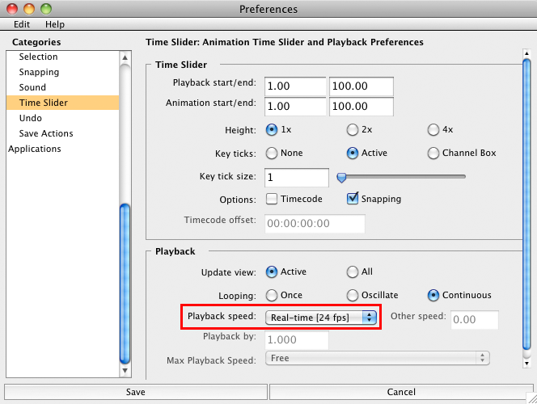
It is also good to generally keep the playback speed at "Real Time" so you can see what your motion will look like in the end.
Setting Keyframes
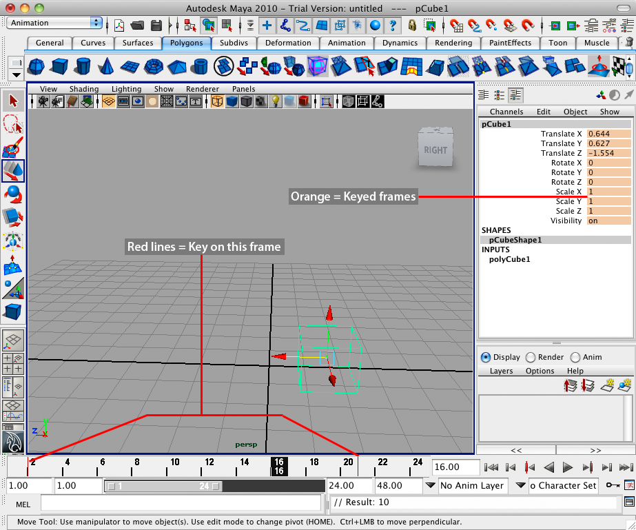
Keyframes define "start" and "end" positions for an object and the computer fills in the rest.
Pressing S will set all the attributes of a particular object. If you would like to set an individual key, right click the property in the channel box and select "Key Selected".
When an object is selected, every frame that contains a Key information for that object will have a red bar in it.
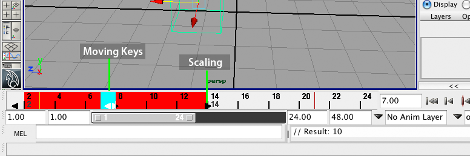
For some quick and dirty editing of keyframes, you can select them in the timeline by holding shift and click-dragging the mouse across your desired area. It will be highlighted in red.
At this point, you can move and scale the keys with the arrows. There are also options such as "Delete Key" when you right click on the red area.
Beware of scaling keys this way. If a key is scaled and lands between frames, your animation will not be very precise since it rounds your keys to integer values.
A much better way to edit kets is through the graph editor.
The Graph Editor
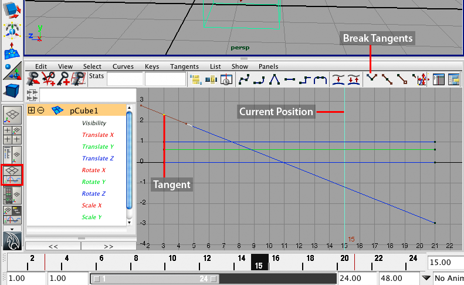
This is your graph editor. It displays all information about the selected object in graph format.
You define the "end points" of the movement, but how does the computer fill in the blanks? Answer: curves. Because there are curves, you can edit their curving behavior.
Here you can move keys, scale them, edit the curve tangents, etc.
You can break tangents to make sharp changes in direction (i.e. a ball hitting the ground).
To move around in the graph editor, you use the same controls as in the perspective view, which are listed below just in case you have forgotten * Zoom: Scroll the middle-mouse button * Pan: Command+Middle-mouse button * F: Focus in on the currently selected keyframes
Creating a Bouncing Ball
We could easily go through each button and short cut, but it is probably best to explain how to do things using an example.
Before beginning this exercise in Maya, it is best to look at a 2D drawing of what a ball actually looks like when it bounces.
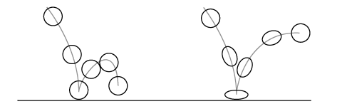
Image from http://www.evl.uic.edu/ralph/508S99/squash.html
Take for example a bouncing ball. A rubber ball bounces higher and squashs more upon impact than a hard league ball. The ease with which an object squashs and stretches defines the rigidity of the material making up an object. We will be imitating a rubber ball.
First create a ball by creating a simply polygonal sphere. If you do not remember how to do this, please refer back to the Introduction to Maya tutorial.
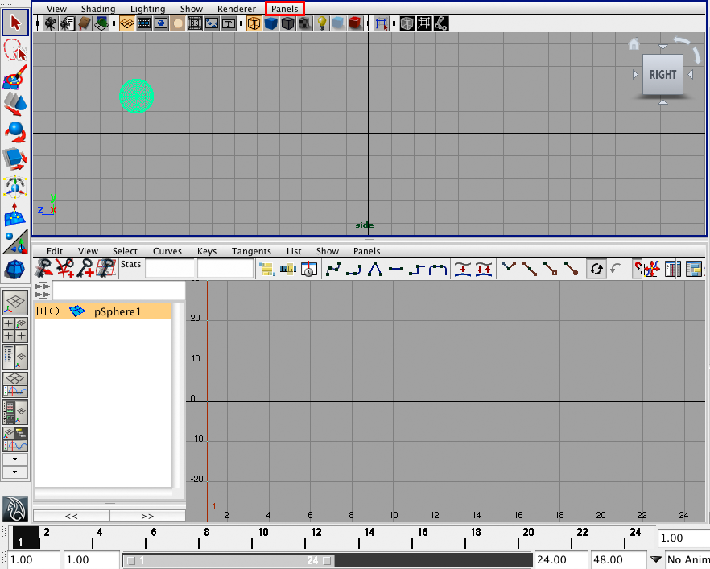
You can change the view of the top panel to "side" view for the purposes of the exercise by going to Panel > Orthographic > Side.
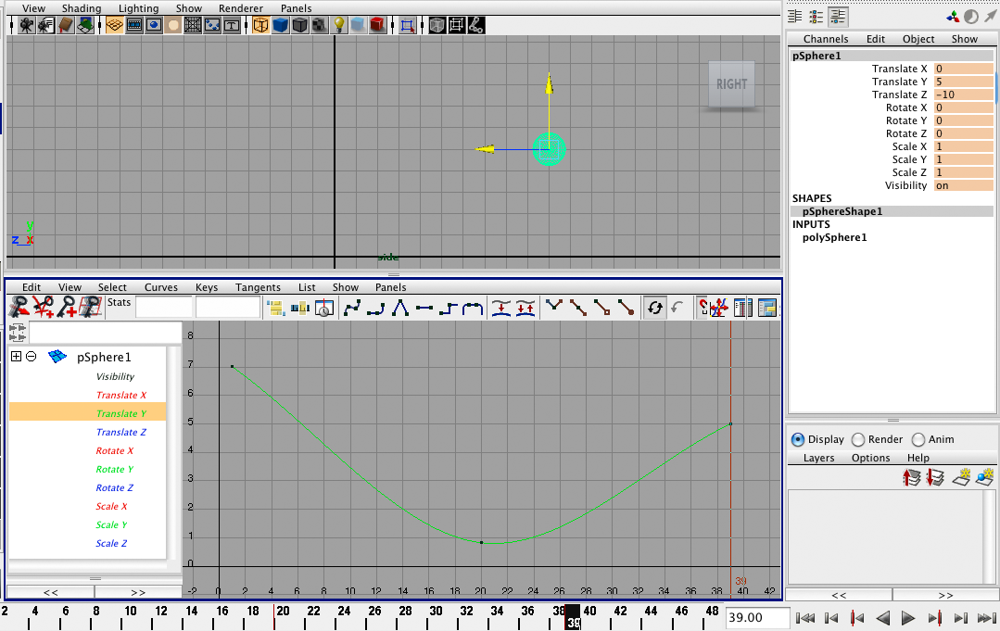
To set the ball bounce, you can set three keys: high, low, and high. You position the ball where you want (either by moving with the move tool or by changing values in the channel editor) at the frame you would like (by selecting that frame on the timeline) and then hitting "S" to set key. For this exercise, it is best to place the keys over a span of about 100 frames to have the ball move more slowly for viewing purposes.
Looking at the graph editor, we can see the curves made by the computer are incorrect! Balls do not slow as it approaches the place it hits.
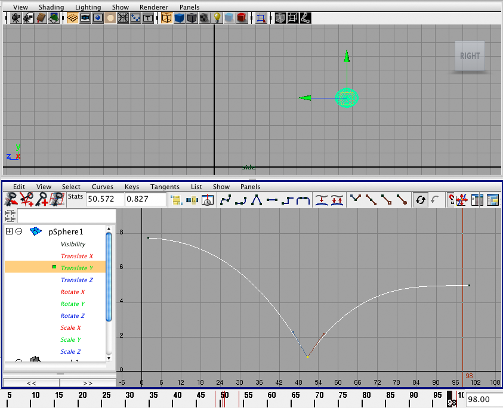
This is better! Let's see how we get our graph to look like this. As we see, the up and down movement of the ball is determined by the y-axis of the graph. We can view just this by selecting "Translate Y" in the graph editor.
We now must change the tangent angle of the low position. You do this by left-clicking the bottom point and selecting the "Break Tangent" button. This will separate the tangent line in two so the two sides are independently controlled. Select the end point of one side of the tangents, hit the W key(for the move tool) and use the middle-mouse-button to change the steepness of that angle. Do this for the opposite whisker. You can leave the two high points as they are, or adjust the angle without breaking the tangent of those as well.
You can now try hitting the "Play" button on the timeline to see what your ball looks like. Woohoo! Pretty neat, huh?
We can take this one step further by adding a deformer to the ball to create the "squash and stretch" attribute a rubber ball has. To do this, select "Animation" from the menu drop down, go to Create Deformer > Nonlinear > Squash. Right now, the deformer is not attached to the ball so if you try to change it's values it will not do exactly what we would like. In order to attach the deformer to the ball, we must first select the deformer in the outliner, command-click the ball, then go to Edit > Parent in the menu bar.
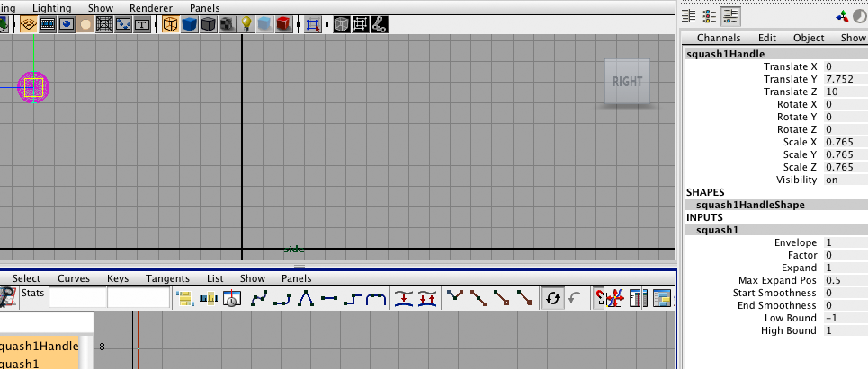
Now that we parented the deformer, we can see in the channel editor that the "squash" input is now available by clicking "Squash". If you select "Factor", you can play with the deformer in perspective view by moving the mouse while holding the middle-mouse-button.
In the first high position, we know that the ball will be (for the most part) a perfect sphere. At the initial frame position, we should right-click "Factor" and click "Key Selected".
Now go a few frames before the ball hits the low point and have the ball be taller.
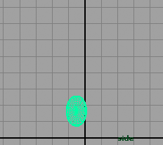
Once the ball hits the bottom, it will be squashed.
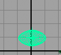
You can repeat the steps for the following side, just in the opposite order.
You may notice that because of the squash, our ball no longer touches the ground! We easily fix this by going into our graph editor, left clicking the point, hitting W, and then using middle mouse button to move the point down.
Congratulations! You have now done your first basic animation! Hit the play button in your timeline. Your ball bounce should now look something like this
We can now do even cooler things with the ball bounce. Download the Maya file for this lab, and do what you've learned here to have the ball bounce down some stairs.
If you feel stuck on how to make the ball bounce down stairs, you can also view Evan's Bouncing Ball Video Tutorial which shows you how to chain the bounces together.